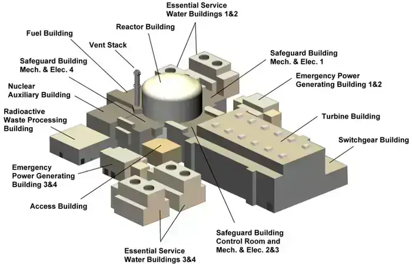
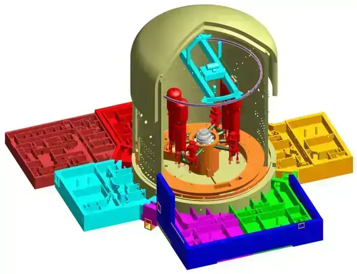
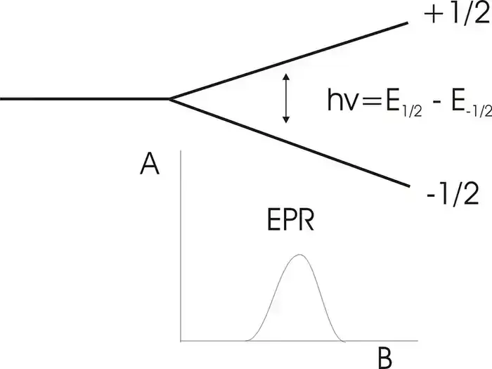

The conjecture
In 2013 Juan Maldacena and Leonard Susskind proposed that Einstein–Rosen bridges (wormholes) and Einstein–Podolsky–Rosen pairs (entangled particles) are two descriptions of the same thing: ER = EPR. The proposal connects quantum information to spacetime geometry.
Maps, diagrams and images






The status
The conjecture is influential and has produced results in black-hole physics, including work on the information paradox and on entanglement between the interiors of black holes. It has not been proved, and it is not clear what observation could test it directly, since the wormholes involved are not traversable.
The archive files it as live debate because it is a serious conjecture with substantial theoretical support and no experimental test.
Documented: the conjecture and its consequences.
Documented: its influence on black-hole physics.
Not proved: the identification.
Not directly testable: at present.
The honest label: live debate.
Why it is in the archive
Because it is a case where the most elegant idea in the field is also the least testable, which is a recurring shape.
Open resources on this topic
- BookSplitting Spacetime and Cloning Qubits: Linking No-Go Theorems across the ER=EPR Duality — ['Ning Bao', 'Jason Pollack', 'Grant N. Remmen'] · 2015 (Internet Archive, free to read)
- BookER=EPR, GHZ, and the Consistency of Quantum Measurements — Leonard Susskind · 2014 (Internet Archive, free to read)
- BookWormhole and Entanglement (Non-)Detection in the ER=EPR Correspondence — ['Ning Bao', 'Jason Pollack', 'Grant N. Remmen'] · 2015 (Internet Archive, free to read)
- PapersOpen-access articles: DOAJ · PubMed Central · Internet Archive Scholar
- BooksPublic-domain and borrowable copies: Open Library · Project Gutenberg · Google Books
Cite this page
Momin, S. (2026). ER = EPR. The Larger World Archive. https://drsamonline.github.io/LARGE_GLOBE/er-equal-epr.htmlMomin, Sohil. “ER = EPR.” The Larger World Archive, 2026, https://drsamonline.github.io/LARGE_GLOBE/er-equal-epr.html.Momin, Sohil. “ER = EPR.” The Larger World Archive, 2026. https://drsamonline.github.io/LARGE_GLOBE/er-equal-epr.html.@misc{er2026er,
author = {Momin, Sohil},
title = {ER = EPR},
year = {2026},
howpublished = {The Larger World Archive},
url = {https://drsamonline.github.io/LARGE_GLOBE/er-equal-epr.html},
note = {Last reviewed 20 November 2026}
}Last reviewed 20 November 2026 · Corrections policy · this page is not peer reviewed
Sources for this page
- Wikipedia, “ER = EPR” — the conjectureen.wikipedia.org
- Wikipedia, “Quantum entanglement” — the phenomenonen.wikipedia.org
- Wikipedia, “Wormhole” — the geometryen.wikipedia.org
- Wikipedia, “Black hole information paradox” — the problem it addressesen.wikipedia.org